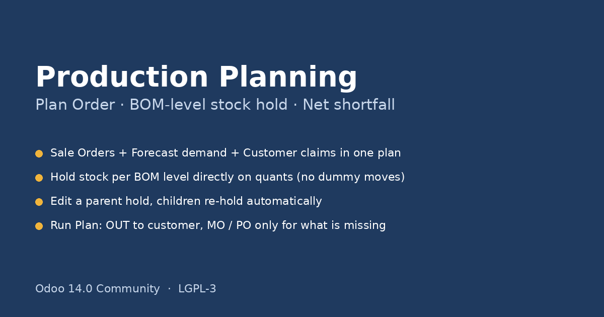
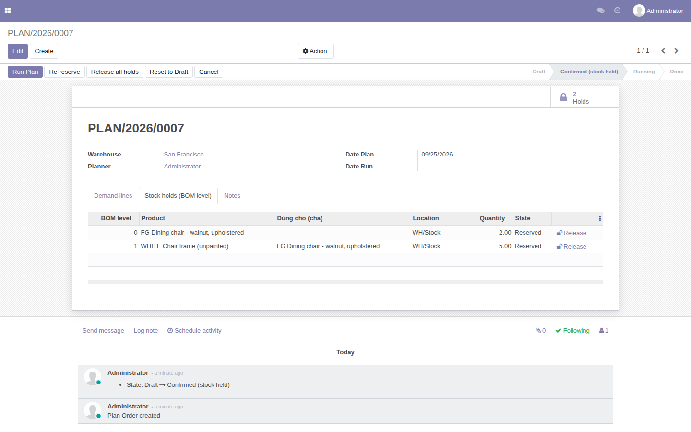
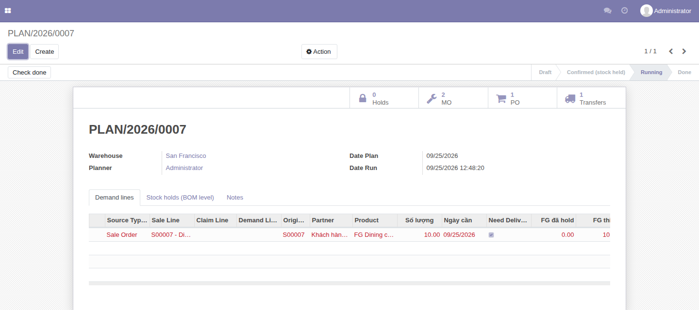

Built for furniture manufacturers: finished goods are painted / polished / upholstered versions of white (unfinished) components kept in stock. Standard Odoo launches MO / PO the moment a Sale Order is confirmed and has no notion of "this stock is earmarked for that plan". This module adds the planning layer in between.

Holds are written directly on stock.quant.reserved_quantity using the same
core method as stock.move._action_assign. Inventory shows the correct
Reserved quantity, other plans see less free stock, but no dummy moves or
pickings are created – one call per product instead of one move per line per level.
5 finished chairs are in stock and a Sale Order needs 5. The planner knows 2 of them are showroom pieces / promised to another customer / in a colour about to be discontinued. She sets the finished-good hold to 3. The module immediately holds the extra white frames and timber needed to produce the 2 missing chairs.
Later 10 more chairs are received. She raises the finished-good hold back to 5 and the surplus component holds are released for other plans.

Languages: English, Tiếng Việt. Available for Odoo 14.0, 15.0, 16.0, 17.0, 18.0, 19.0 and 20.0 Community — the same unit tests (SO gate, BOM-level hold, cascade, forecast, claim) run green on every version.
Gom Sale Order đã xác nhận, Demand Order (dự báo, sản xuất nhập kho) và Claim (CS tạo, QA/QC duyệt) vào một Plan Order. Xác nhận plan → Odoo giữ hàng theo từng BOM level: giữ thành phẩm trước, phần thiếu mới nổ xuống component trắng, rồi nguyên liệu. Chạy plan → phiếu OUT giao khách, MO / PO chỉ cho phần thiếu.
Giữ hàng ghi thẳng lên reserved_quantity của quant (cùng hàm core mà
_action_assign dùng) nên Inventory hiện Reserved đúng, không tạo move / phiếu giả,
nhanh hơn nhiều so với cách tạo từng move của OCA stock_reserve.
Kho có 5 ghế thành phẩm, đơn hàng cần 5. Planner biết 2 cái là hàng showroom / đã hứa cho khách khác / màu cũ sắp đổi → chỉnh giữ còn 3. Module tự giữ thêm khung trắng và gỗ để sản xuất mới 2 cái.
Ngược lại, vừa nhập kho thêm ghế → planner tăng giữ thành phẩm → nhu cầu component giảm → module nhả component ra cho plan khác dùng.